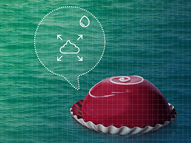
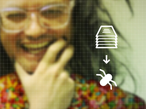

The Future
of Cake
Strategic agencies often apply their skills to imagining possible scenarios their clients might prepare for. These speculative futures have become an important technique for educating clients about the technologies and social trends of our times.
As a benevolent service to the world, these corporate prophets sometimes apply their valuable resources to apply design thinking to public considerations of social concerns. Most of the important subjects of our time benefit from some of this treatment, such as communications, selecting TV entertainment, transportation, shopping for clothes, energy production, and interacting with slabs of glass.
Despite this noble history, scant attention has been paid to the critical issue of dessert. In hopes of remedying this oversight, The Artificial invites you to dig deeper into the Future of Cake.
CakeNet™
Fig. 01
Fig. 02
Fig. 03
Using your Watch, tap the cake icon. In select urban areas, use a deep press to specify SpeedCake™ [Fig. 01].
Be sure to allow the CakeNet™ app access to your biometrics and activity data, so we can engineer the best possible cake for you.
The CakeNet™ oven at your local bakery will immediately prepare a cake just for you. The thin layers are a result of our CakeNet™ printing process, so you know this cake has been optimized for your current nutritional needs [Fig. 02].
Within 30 minutes, look for an Uber driver* to deliver your cake [Fig. 03]!
If you have chosen SpeedCake™, an Amazon Drone will deliver your cake within 15 minutes. Keep your Watch with you and don't go too deep indoors so the drone can find you!
*Surge pricing charges may apply.
Today, 2018
Several participants of a group calling itself the Cult of the Dead Cake are being held on hacking charges. The California Department of Justice alleges they were behind the recent compromise of CakeNet™ supply systems involuntarily exposed thousands of area families to measles vaccines.
BakerBot™
Fig. 01

Fig. 02
Fig. 03
The best way to improve yourself is through positive reinforcement. Reward yourself every Cake with BakerBot™.
Setting up your BakerBot™ oven is easy. After a quick 9-step process to connect to your home network,2 simply connect your social, fitness tracking, bank account, work productivity measurement, and medical record accounts. Then you’re ready to choose from the self-improvement goals our BakerCoach™ algorithms suggest, insert dough cartridges3, and begin your journey to a better you!
BakerCoach™ will use your social media profiles to ensure you get precisely the kind of cake that’s right for you, including the flavor brands being discussed by your friends. You’ll never feel left out at the watercooler because you haven’t tried the latest.
The included smart BakerKnife™ will use laser projection and haptic guidance to ensure you slice off only as much cake as you deserve. We all have bad Cakes, so when you don’t deserve reward, the BakerBot™ will give you the extra push you need by still letting you see and smell a delicious cake through the window before recycling it.
Today, 2025
North American sales of BakerBot™ ovens have been temporarily suspended pending recertification in the Federal Nothing-to-Hide program. Mainstream media reports that the sprinkles placement algorithms are easily subverted must be investigated to ensure the integrity of CitizenID encoding and address concerns that cakes have been used as a medium for illegally encrypted messages.
Aid Cake
Fig. 01
Fig. 02
Fig. 03
Global catastrophe was narrowly averted by the UNICEF aid cakes developed at the onset of the megadrought.
The development of drought-ready drywheat came just in time for the monocorn collapse. Even in areas where fresh water is still available, global economics led local farmers to plant drywheat and ferment it for the fuel used to transport water to areas able to buy it.
UN-funded research resulted in a nano-milling process that allows drywheat flour and insect4 proteins to form a concentrated cake base that hydrates to a doughy texture even with saltwater. Coastal populations below the arctic circle have grown dependant on these aid cakes, keeping the few capable milling factories at capacity.
Drone drops of new shipments onto coastal waters create quite the spectacle, as little red meals plump and float, waiting for boats to come harvest them and restock the urban distribution centers.
Today, 2030
It is said that pre-collapse cakes were a luxury available in a wide variety of “flavors”.
Holders of Apple iCards or Xiaomi MiCitizenship are eligible to purchase cakemasks, which augment the cake eating experience with olfactory and visual stimuli. UX historians believe these recreations are a reasonable facsimile of legendary experiences such as “chocolate” and “cinnamon”.
CakePop Vine
Fig. 01
Fig. 02
Fig. 03
The CakePop Vine brings mouth watering cakes to the massess.
With the world going even more crazy for cake, scientists turn to GMO cake vines to help feed the world’s (dietary needs) unquenchable thirst for cake.
Distinct CakePop Vine regions across the world being producing some of the finest vintage of cakes the world has ever seen. Investment funds plough millions of dollars into CakePop vine startups, causing a CakePop vine bubble.
During a Goat’s Milk hackathon in Amsterdam, a group of hackers develop Grade 1 level Icing, with complexity levels never seen before in the icing world. With this revelation, Goat’s value on the stock market skyrocket.
Today, 2030
lost to wiki bug :-(
Cakewear
Fig. 01
Fig. 02
Fig. 03
Inventor Elon Shingy continues to strengthen his legacy of world-changing products, this time in cakewear bands.
The greatest minds of our time have been working to address crumbling, staleness, and mold. But their small, iterative improvements to baking techniques have been disrupted with E.S.’s technique to repair damage.
His new Shingy Shield is an inexpensive powder of disposable nanorobots that quickly learn together how to provide full coverage of band they have been placed on. Without interfering with the usual nutrient dosing through the cake-skin interface, these nanites detect damage to cake and even sense skin biometrics to predict problems and summon a swarm to strengthen the cakewear band.
E.S. reports that collaborations with major health insurers are underway to use the archived biodata in spent nanites to better serve customers.
Today, 2030
Shingy Shield might also be used for authentication. Every wearer’s nanites learn to arrange in unique patterns that can be scanned, and some security checkpoints are testing methods to detect this signature and speed passage between freedom zones.